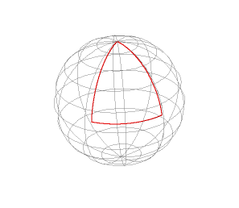
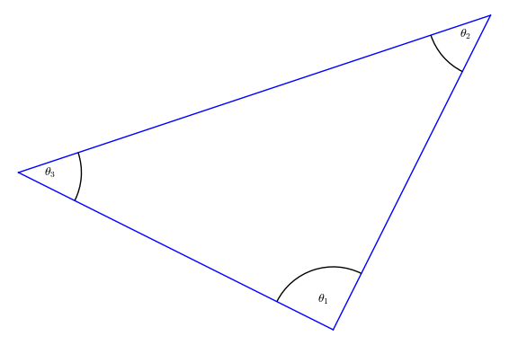
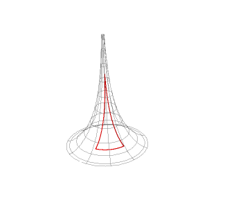
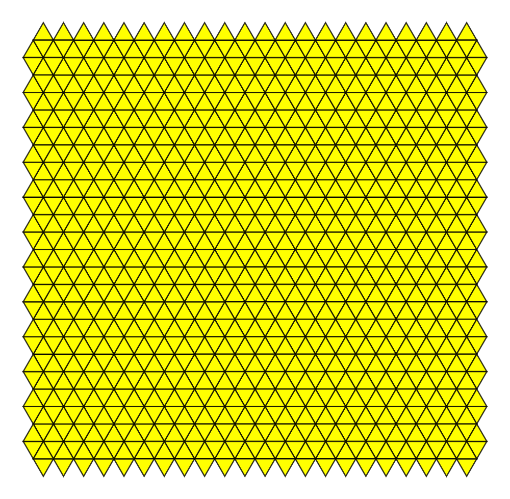
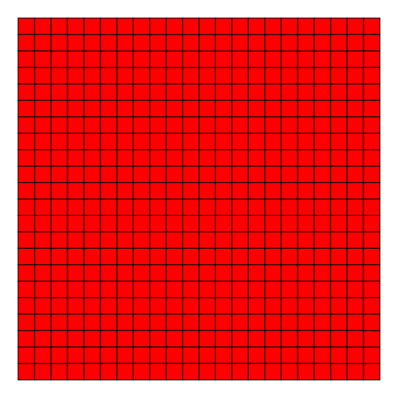
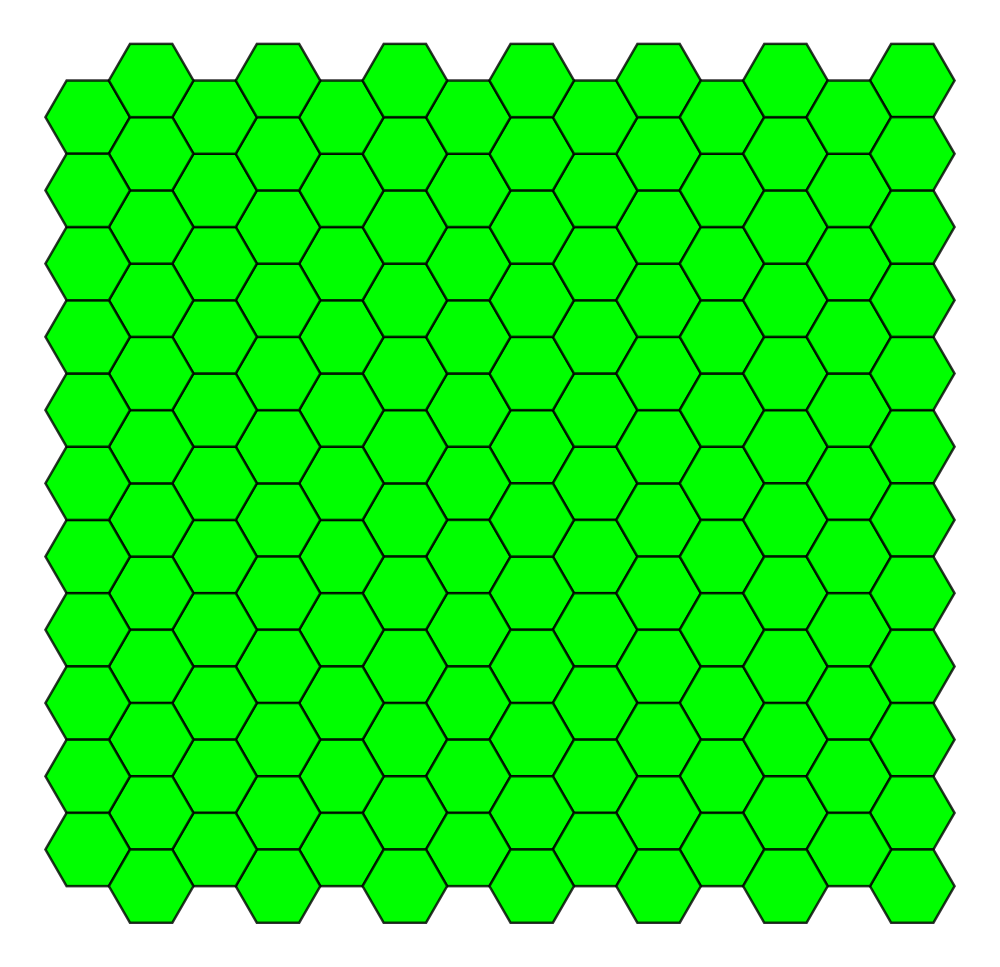
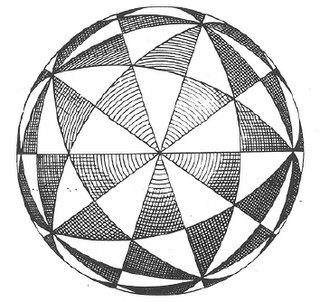
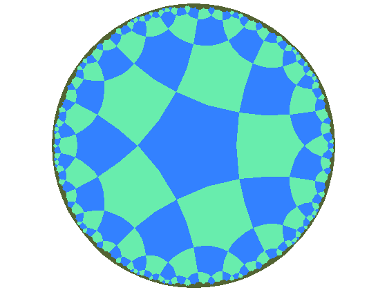

A piecewise regular curve \(\gamma : [a, b] \to S\) is a continuous curve such that there exists a partition \[ a = t_0 < t_1 < \cdots < t_{k-1} < t_k = b \] with \(\gamma\) is regular on \([t_i, t_{i+1}]\). The points \(\gamma(t_i)\) are called the vertices.
Regular means differentiable and \(\gamma' \ne 0\) with left and right continuous limits: \(\lim_{t\to^+ t_i} \gamma'(t)\) and \(\lim_{t\to^- t_i} \gamma'(t)\) are defined and non-zero \[ \gamma'_-(t_i) = \lim_{t\to t_i^-} \gamma'(t), \quad \gamma'_+(t_i) = \lim_{t\to t_i^+} \gamma'(t). \]
\[ T_{\pm} (t_i) = \lim_{t\to t_i^{\pm}} T(t) \]
\[ \theta_i = \arccos g(T_-(t_i), T_+(t_i)) \in (-\pi, \pi) \] with \(\theta_i > 0\) when \(T_-, T_+\) is positively oriented and negative otherwise.
Let \(D \subseteq S\) be homeomorphic to a disc with boundary a piecewise regular, simple, closed curve, \(\gamma\). Then \[ \int_D K dA + \int_{\gamma} \kappa ds = 2\pi - \sum_{i=1}^k \theta_i. \]
\[ \int_{\gamma} \kappa ds = \sum_{i=1}^k \int_{t_{i-1}}^{t_i} \kappa ds. \]
\(K \equiv 0\) so Gauss-Bonnet becomes \[ \int_{\gamma} \kappa ds = 2\pi - \sum_{i=1}^k \theta_i. \]
For \(\gamma\) regular (no vertices) Turning Tangents gives \[ \int_{\gamma} \kappa ds = 2\pi. \]
For piecewise regular, break up the integral at the vertices:
\begin{equation*} \begin{split} \int_{\gamma} \kappa ds &= \sum \int_{t_{i-1}}^{t_i} \kappa ds \\ &= \sum \int_{t_{i-1}}^{t_i} \partial_s \theta ds = \sum \theta^-(t_i) - \theta^+(t_{i-1}) \\ &= \theta(t_k)^- - \theta(t_0)^+ + \sum \theta^-(t_i) - \theta^+(t_i) \\ &= 2\pi - \sum \theta_i. \end{split} \end{equation*}Let \(D \subseteq S\) be homeomorphic to a disc with boundary a piecewise regular, simple, closed curve, \(\gamma\). Then \[ \int_D K dA + \int_{\gamma} \kappa ds = 2\pi - \sum_{i=1}^k \theta_i. \]
Proof sketch in the case \(D\) is contained in a local parametrisation
Choose coordinates such that \[ g = \begin{pmatrix} g_{uu} & 0 \\ 0 & g_{vv} \end{pmatrix} \]
Geodesic curvature of \(\gamma(s) = (u(s), v(s))\): \[ \kappa = \frac{1}{2\sqrt{g_{uu}g_{vv}}} \left(\partial_v g_{vv} \partial_s v - \partial_u g_{uu} \partial_s u\right) + \partial_s \theta \]
Plane: \(\kappa = \partial_s \theta\)
Integrating the geodesic curvature,
\begin{equation*} \begin{split} \int_{t_{i-1}}^{t_i} \kappa ds &= \int_{t_{i-1}}^{t_i} \frac{\partial_v g_{vv} \partial_s v - \partial_u g_{uu} \partial_s u}{2\sqrt{g_{uu}g_{vv}}} ds + \int_{t_{i-1}}^{t_i} \partial_s \theta ds \\ &= \int_{t_{i-1}}^{t_i} \left(\frac{\partial_v g_{vv}}{2\sqrt{g_{uu}g_{vv}}}\right) \partial_s v ds - \left(\frac{\partial_u g_{uu}}{2\sqrt{g_{uu}g_{vv}}}\right) \partial_s u ds \\ &\quad + \theta(t_i) - \theta(t_{i-1}) \end{split} \end{equation*}Gauss-Green Theorem: \[ \int_{\gamma} P du + Q dv = \int_D \partial_u Q - \partial_v P dA \]
By Gauss-Green with \[ P = - \frac{1}{2\sqrt{g_{uu}g_{vv}}} \partial_u g_{uu}, \quad Q = \frac{1}{2\sqrt{g_{uu}g_{vv}}} \partial_v g_{vv} \]
\begin{equation*} \begin{split} \int_{\gamma} \kappa ds &= \int_D \partial_u \left(\frac{\partial_v g_{vv}}{2\sqrt{g_{uu}g_{vv}}}\right) + \partial_v \left(\frac{\partial_u g_{uu}}{2\sqrt{g_{uu}g_{vv}}}\right) dA \\ &\quad + \sum \theta(t_i) - \theta(t_{i-1}) \end{split} \end{equation*}In our coordinate system with (\(g_{uv} = g_{vu} = 0\)) the integrand just so happens to be the Gauss curvature: \[ K = \partial_u \left(\frac{1}{2\sqrt{g_{uu}g_{vv}}} \partial_v g_{vv}\right) + \partial_v \left(\frac{1}{2\sqrt{g_{uu}g_{vv}}} \partial_u g_{uu}\right) \]
\begin{equation*} \begin{split} \int_{\gamma} \kappa ds &= \int_D K + \sum \theta(t_i) - \theta(t_{i-1}) \\ &= \int_D K + 2\pi - \sum \theta_i \end{split} \end{equation*}A geodesic is a curve \(\gamma : I \to S\) such that \(\nabla_{\gamma'} \gamma' = 0\). That is such that \(\kappa \equiv 0\).
Geodesics generalise straight lines.
A geodesic triangle is a piecewise regular, simple closed curve with precisely three vertices that is the boundary of a region \(D\) homeomorphic to a disc and such that each regular arc is a geodesic.
Let \(\varphi_i = \pi - \theta_i \in (0, 2\pi)\) be the interior angles. Then
\begin{equation*} \begin{split} 2\pi - (\theta_1 + \theta_2 + \theta_3) &= 2\pi - (\pi - \varphi_1 + \pi - \varphi_2 + \pi - \varphi_3) \\ &= \varphi_1 + \varphi_2 + \varphi_3 - \pi \end{split} \end{equation*}By Gauss-Bonnet \[ \int_D K dA = 2\pi - (\theta_1 + \theta_2 + \theta_3) = \varphi_1 + \varphi_2 + \varphi_3 - \pi. \]
\(K \equiv \pm 1\) \[ \pm \operatorname{Area} (D) = \int_D K dA = \varphi_1 + \varphi_2 + \varphi_3 - \pi \]
Plane \(K \equiv 0\) \[ 0 = \int_D K dA = \varphi_1 + \varphi_2 + \varphi_3 - \pi \]



A regular \(n\)-gon of \(S\) is a piecewise regular, simple, closed curved with \(n\) vertices, bounding a disc whose arcs are all geodesics of the same length meeting at the same angle \(\theta\).
Let \(P_i\) denote a regular \(n\)-gon including the boundary curve and the interior.
A regular tiling of \(S\) is a set of regular \(n\)-gons \(P_i\) all of the same area such that
In the plane, the interior angle of a regular \(n\)-gon is \[ \theta = \pi - 2\pi/n. \]
Let \(k\) be the number of \(n\)-gons meeting at a vertex so that adding \(k\) copies of \(\theta\) gives \(2\pi\): \[ 2\pi = k \theta = k(\pi - 2\pi/n) = \frac{kn - 2k}{n} \pi \]
\[ 2n = kn - 2k \]
\[ (k, n) = (6, 3), (4, 4), (3, 6) \]
\[ (k, n) = (6, 3) \]

\[ (k, n) = (4, 4) \]

\[ (k, n) = (3, 6) \]

On the sphere: \[ 2\pi > \frac{kn - 2k}{n} \pi. \] Hence \[ (k - 2)(n - 2) < 4 \]
Not many solutions…
Congruent but not regular polygons allows more possibilities

The Poincaré disc is the unit disc \(D = \{x^2 + y^2 < 1\}\) equipped with a metric \(g\) such that \(K \equiv -1\). Gauss-Bonnet applies.
Now we have \[ (k - 2)(n - 2) > 4 \] Infinitely many solutions!
